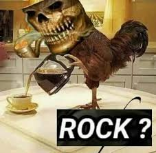

A HORA DO ROCK É DAQUI:
--:--:--
Horário definido:
--:--
Horário gerado:
--:--
Uma curiosidade?
Rock coletivo
Fast Rock
üêç Jogar
Jogo da Cobrinha
❌
Escolha a Hora do Rock
Definir Hora do Rock
Carregando dick...